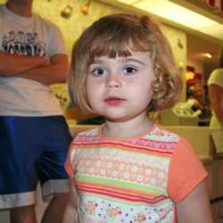
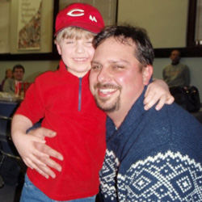

2008
In 2008 we were lucky enough to grant two wishes. Find out more:
-
Riley

D4D members will always remember Riley, one of D4D’s first Wish Children, for her love of the camera. At first sight of a camera, Riley was there with a smile and the lovable exclaimation “cheese,” often before anyone even lined up the photo. With the simple raise of a camera Riley had fallen into the routine of having her photos taken by her parents and both sets of grandparents as they joined her at for her wish in 2008.
While at Give Kids the World, the D4D team had the opportunity to visit with the Ball family for an ice cream social. During their time together, young Riley was as active as could be visiting with team members, but only when they could pull her from her 20 laps around the Merry-Go-Round with her dad.
The bond between Riley’s family and the D4D team really began three months before at the Mickey Mouse Pancake Breakfast in October. This first pancake breakfast was one of the 2008 team’s largest fundraisers and a wonderful way to meet the family, beginning a tradition for years to come.
Riley’s parents now look forward to the day when she is old enough to volunteer with D4D in order to send another family to GKTW for a wish trip much like her own!
-
Alex

Alex is an extraordinary child who loves hot wheels and Spongebob Squarepants. His favorite part about Spongebob is that he lives in the ocean, somewhere Alex had never been able to visit. During their trip to Give Kids the World, Alex and his family were able to take their first trip to the ocean; Alex never stopped talking about it!
At the end of the year banquet, while visiting with members of Distance 4 Dreams, Alex handed each of them a thank you card with two photos. One of Alex and a racecar and the second was Alex playing on the beach for his first time.
Alex and his family are forever grateful for the opportunity to have shared a week together outside the hospitals and to have enjoyed the feeling of the sand between their toes for the very first time!